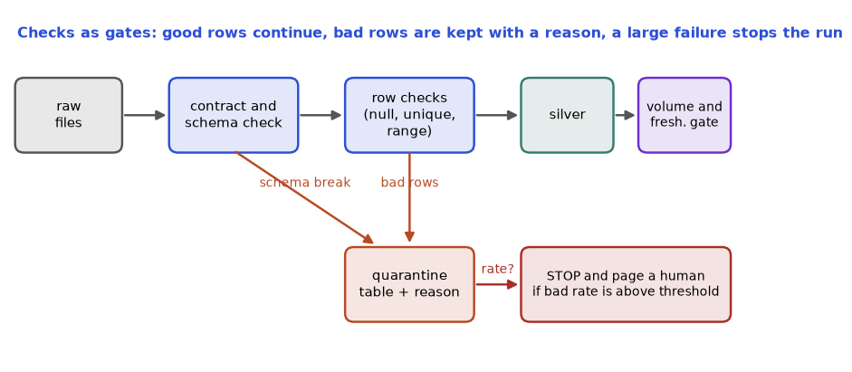

A dashboard that is fast and wrong is worse than no dashboard, because people make decisions from it. The classic story: revenue drops 40% on Monday morning, the CFO panics, and three hours later someone finds that an upstream job ran empty over the weekend. Nobody tested the data. In this chapter you will learn the dimensions of data quality, how to write checks (uniqueness, nulls, ranges, allowed values, freshness, volume, schema), how to write a data contract, how to separate "stop the pipeline" from "warn and continue", how to unit-test transformations, and how tools such as Great Expectations, pandera, Soda and dbt tests express the same ideas. You will write and run real checks and see them fail on purpose.
Remember the ShopKart orders table from Chapter 4. We use it again here.
| Dimension | Question it asks | Example check |
|---|---|---|
| Completeness | Is anything missing? | customer_id not null; row count near normal |
| Uniqueness | Are there duplicates? | order_id unique |
| Validity | Do values follow the rules? | amount >= 0; status in an allowed list |
| Consistency | Do tables agree? | order totals equal the sum of order lines |
| Accuracy | Does it match reality? | revenue equals finance's number (needs an external reference) |
| Timeliness / freshness | Is it recent enough? | newest row is under 24 hours old |
| Schema | Are names and types as expected? | no missing or new columns |
A check (or test, or expectation) is a query or function that returns pass or fail. A severity says what to do on failure: error stops the pipeline (do not publish bad data) and warn only alerts.
The table has five rows, and we hid a few problems in it. Before you run it: which checks do you think will fail? How many bad rows will each report?
import sqlite3, datetime
db = sqlite3.connect(":memory:")
db.executescript("""
CREATE TABLE orders(order_id TEXT, customer_id TEXT, amount REAL, status TEXT, created_at TEXT);
INSERT INTO orders VALUES
('O1','C1',250.0,'PAID','2024-06-01T10:00:00'),
('O2','C2',-5.0,'PAID','2024-06-01T11:00:00'),
('O2','C2',80.0,'PAID','2024-06-01T11:05:00'),
('O3',NULL,120.0,'SHIPPED','2024-06-01T12:00:00'),
('O4','C9',99.0,'UNKNOWN','2024-05-20T12:00:00');
""")
def check(name, sql):
bad = db.execute(sql).fetchone()[0]
print(f"{'PASS' if bad == 0 else 'FAIL'} {name:28s} bad_rows={bad}")
return bad == 0
results = [
check("unique order_id", "SELECT COUNT(*)-COUNT(DISTINCT order_id) FROM orders"),
check("customer_id not null", "SELECT COUNT(*) FROM orders WHERE customer_id IS NULL"),
check("amount >= 0", "SELECT COUNT(*) FROM orders WHERE amount<0"),
check("status in allowed set", "SELECT COUNT(*) FROM orders WHERE status NOT IN ('PAID','SHIPPED','REFUNDED')"),
]
now = datetime.datetime(2024, 6, 2, 9, 0, 0)
newest = datetime.datetime.fromisoformat(db.execute("SELECT MAX(created_at) FROM orders").fetchone()[0])
age = (now - newest).total_seconds() / 3600
print(f"{'PASS' if age < 24 else 'FAIL'} freshness (<24h) age_hours={age:.1f}")
history = [1000, 980, 1020, 1010, 990]; today = 612
avg = sum(history) / len(history); ratio = today / avg
print(f"{'PASS' if 0.7 <= ratio <= 1.3 else 'FAIL'} volume within 70-130% of avg ratio={ratio:.2f}")
expected = {"order_id":"TEXT","customer_id":"TEXT","amount":"REAL","status":"TEXT","created_at":"TEXT"}
actual = {r[1]: r[2] for r in db.execute("PRAGMA table_info(orders)")}
print("PASS schema matches" if actual == expected else f"FAIL schema diff {set(expected.items()) ^ set(actual.items())}")
print("overall:", "OK" if all(results) else "BLOCK the pipeline (fail loudly)")Real output:
FAIL unique order_id bad_rows=1
FAIL customer_id not null bad_rows=1
FAIL amount >= 0 bad_rows=1
FAIL status in allowed set bad_rows=1
PASS freshness (<24h) age_hours=21.0
FAIL volume within 70-130% of avg ratio=0.61
PASS schema matches
overall: BLOCK the pipeline (fail loudly)Explain, check by check.
order_id values (O2 twice), so 5 − 4 = 1 duplicate.UNKNOWN: 1 row.2024-06-01T12:00:00 and "now" is 2024-06-02T09:00:00. The difference is 21 hours, under the 24-hour limit: PASS. (We fixed "now" so that the output is repeatable.)all(results) covers only the four SQL checks (all FAIL), so the pipeline is blocked.Note that SQLite is loose about types; in a real warehouse the schema check compares the information schema.
Problem 5.1.1 A table normally receives about 50,000 rows a day, with a daily standard deviation of 2,000. Today it received 41,000. Is that an anomaly under a "mean ± 3 standard deviations" rule?
| Formula | z = (x − mean) / standard deviation |
|---|---|
| Plug in | (41,000 − 50,000) / 2,000 |
| Compute | −9,000 / 2,000 = −4.5 |
| Answer | z = −4.5, beyond ±3, so flag it. (Under a normal assumption, about 0.3% of days fall outside ±3.) |
| Check | The 3-sigma band is 50,000 ± 6,000 = 44,000 to 56,000; 41,000 is outside it. |
| Why it matters | A fixed "at least 1,000 rows" check would pass; a statistical band catches a drop of 18%. (See the learner's Math PDF on standard deviation.) |
Problem 5.1.2 Build a row-count reconciliation: source has 1,204,500 rows, bronze 1,204,500, silver 1,199,100, gold has 1,199,100. Where were 5,400 rows lost, is it acceptable, and what do you do?
| Step 1 | Compare neighbours: source to bronze: 0 lost. Bronze to silver: 1,204,500 − 1,199,100 = 5,400 lost. Silver to gold: 0 lost. |
|---|---|
| Step 2 | The silver step removes duplicates and bad rows. Percentage: 5,400 / 1,204,500 = 0.448%. |
| Answer | Silver dropped 5,400 rows (0.45%). Acceptable only if the dropped rows are accounted for: duplicates plus quarantined rows must add up to 5,400. Write them to a quarantine table and assert silver + quarantine + duplicates = bronze. |
| Check | If duplicates are 5,000 and quarantined bad rows are 400, then 1,199,100 + 5,000 + 400 = 1,204,500. |
| Why it matters | "Rows removed silently" is a quality bug; "rows removed and explained" is a feature. |
You will add checks at every layer: raw (freshness, volume, schema), silver (uniqueness, not null, valid values), gold (reconciliation with finance, business rules).
Check yourself
A data contract states: the schema (fields, types, nullability), semantics (what amount_paise means, its unit), quality rules, freshness and volume expectations (SLAs), an owner, and how changes are announced. It is checked automatically when data is produced or ingested.
Schema drift is when the source changes shape without telling you: a column is added, a type changes, a field disappears. Schema evolution is the planned, compatible way to change. Safe changes: add a nullable column. Breaking changes: rename, remove, change a type, change a unit (rupees to paise).
Before you run it: five records arrive. Which fail and for what reasons? With a 95% pass-rate rule, what happens to the load?
CONTRACT = {"order_id": {"type": str, "required": True},
"amount_paise": {"type": int, "required": True, "min": 0},
"status": {"type": str, "required": True, "allowed": {"PAID", "SHIPPED", "REFUNDED"}},
"coupon": {"type": str, "required": False}}
def validate(rec):
errs = []
for f, rule in CONTRACT.items():
if f not in rec or rec[f] is None:
if rule["required"]: errs.append(f"{f}: missing")
continue
v = rec[f]
if not isinstance(v, rule["type"]): errs.append(f"{f}: expected {rule['type'].__name__}, got {type(v).__name__}")
elif "min" in rule and v < rule["min"]: errs.append(f"{f}: {v} < {rule['min']}")
elif "allowed" in rule and v not in rule["allowed"]: errs.append(f"{f}: {v!r} not allowed")
extra = set(rec) - set(CONTRACT)
if extra: errs.append(f"unexpected fields (schema drift): {sorted(extra)}")
return errs
batch = [{"order_id": "O1", "amount_paise": 25000, "status": "PAID"},
{"order_id": "O2", "amount_paise": "1,250.50", "status": "PAID"},
{"order_id": "O3", "amount_paise": -5, "status": "LOST"},
{"order_id": "O4", "amount_paise": 900, "status": "SHIPPED", "gift_wrap": True},
{"amount_paise": 100, "status": "PAID"}]
ok = 0
for r in batch:
e = validate(r); ok += not e
print("OK " if not e else "FAIL", r.get("order_id", "<none>"), e)
print(f"valid {ok}/{len(batch)} = {ok/len(batch):.0%}; threshold 95% -> {'PASS' if ok/len(batch) >= 0.95 else 'FAIL the load'}")Real output:
OK O1 []
FAIL O2 ['amount_paise: expected int, got str']
FAIL O3 ['amount_paise: -5 < 0', "status: 'LOST' not allowed"]
FAIL O4 ["unexpected fields (schema drift): ['gift_wrap']"]
FAIL <none> ['order_id: missing']
valid 1/5 = 20%; threshold 95% -> FAIL the loadExplain.
"1,250.50" as text, a type break (also a unit change from paise to rupees; this one change is hard to see in data, which is why a contract documents units).gift_wrap: drift. Many teams treat unknown fields as a warning and keep the rest, but must tell the producer.order_id.Quarantine pattern (dead-letter table): write failing records, with the reasons and the run id, to a quarantine_orders table. Continue with the good rows. A person (or a later job) fixes the rule or the data, and the rows are replayed. This is the batch version of a dead-letter queue.
Schema registries (Chapter 11) enforce contracts for Kafka producers. For tables, dbt supports model contracts (contract: enforced: true), and tools such as Soda and Great Expectations compare against declared schemas.
Problem 5.2.1 Classify each source change as safe or breaking: (a) a new nullable column coupon; (b) amount changes from rupees to paise; (c) status gets a new allowed value PARTIAL; (d) column cust_id renamed to customer_id.
| Step 1 | (a) Old readers ignore it: safe. |
|---|---|
| Step 2 | (b) The name and type are the same, but the numbers are 100 times larger: breaking (a silent semantic break). |
| Step 3 | (c) Readers with strict allowed lists will fail: breaking for them; announce it. |
| Step 4 | (d) Old queries fail with "column not found": breaking. |
| Answer | (a) safe; (b), (c), (d) breaking. |
| Check | A change is safe only if every existing reader keeps working and keeps the same meaning. |
| Why it matters | (b) is the dangerous one: nothing crashes, the revenue just becomes 100 times larger. |
Problem 5.2.2 A batch of 2,000 records has 3 invalid. The rule: quarantine if under 1% invalid, fail the load otherwise. What happens?
| Formula | invalid rate = invalid / total |
|---|---|
| Plug in | 3 / 2,000 |
| Compute | 0.0015 = 0.15% |
| Answer | 0.15% is under 1%: quarantine the 3 records and load the other 1,997. |
| Check | 1,997 + 3 = 2,000: no record is lost or hidden. |
Contracts reduce the "upstream broke us" incidents. When you join a team, ask: "Is there a schema, who owns it, and who is told when it changes?"
Check yourself
Keep transformation logic in small functions that take data and return data, with no hidden reads of "now" or of a database. Then tests are simple. Here is a function that converts paise to rupees and a splitter that separates good rows from rows to quarantine, with five tests using Python's built-in unittest (we use it here because pytest is not installed in this sandbox; pytest is the more common choice in real projects and the test bodies would be plain assert statements).
import unittest
def clean_amount(raw):
"""paise string -> rupees float, or None if invalid"""
try: v = int(raw)
except (TypeError, ValueError): return None
return None if v < 0 else v / 100
def split_valid(rows):
good, bad = [], []
for r in rows:
a = clean_amount(r.get("amount_paise"))
(bad if a is None or not r.get("order_id") else good).append(
{**r, "amount": a} if a is not None else {**r, "reason": "bad amount or id"})
return good, bad
class T(unittest.TestCase):
def test_ok(self): self.assertEqual(clean_amount("25050"), 250.5)
def test_negative(self): self.assertIsNone(clean_amount("-5"))
def test_text(self): self.assertIsNone(clean_amount("abc"))
def test_none(self): self.assertIsNone(clean_amount(None))
def test_split(self):
g, b = split_valid([{"order_id": "1", "amount_paise": "100"}, {"order_id": "2", "amount_paise": "x"},
{"order_id": "", "amount_paise": "5"}])
self.assertEqual((len(g), len(b)), (1, 2))
if __name__ == "__main__": unittest.main(verbosity=2)Before you run it: do you expect all five to pass?
test_negative (__main__.T.test_negative) ... ok
test_none (__main__.T.test_none) ... ok
test_ok (__main__.T.test_ok) ... ok
test_split (__main__.T.test_split) ... ok
test_text (__main__.T.test_text) ... ok
----------------------------------------------------------------------
Ran 5 tests in 0.000s
OKExplain. 25050 paise is 250.50 rupees (25050 / 100). Negative and non-numeric inputs return None, and None itself (a missing field) also returns None because int(None) raises TypeError, which we catch. In test_split, the first row is good, the second has amount "x" (bad), the third has an empty order_id (bad): 1 good, 2 bad. Check: 1 + 2 = 3 rows in, 3 rows out. Interpretation: tests also document the rules. When someone changes clean_amount, a failing test tells them which rule they broke. Note the test order is alphabetical, not the order written.
Small but important test habits for pipelines:
| Test type | What it protects | Example |
|---|---|---|
| Unit test | transformation logic | clean_amount cases, edge cases (null, empty, zero, huge) |
| Data test | today's data | unique, not null, accepted values |
| Integration test | the pipeline end to end on a small sample | run on 100 rows in a test schema, compare to expected |
| Reconciliation | source versus target | counts and sums match |
| Regression test | no change in outputs unless intended | compare gold tables before and after a code change |
| Tool | Style | How you define checks | Notes |
|---|---|---|---|
| pandera | Python, DataFrame schemas | DataFrameSchema with Column(...) and Check | good for pandas and Polars pipelines |
| Great Expectations (GX) | Python, expectation suites | expect_column_values_to_not_be_null and friends, checkpoints, data docs | rich, heavier setup |
| Soda | YAML (SodaCL) | checks for orders: - missing_count(customer_id) = 0 | simple, good for warehouses |
| dbt tests | SQL / YAML in the dbt project | unique, not_null, accepted_values, relationships, custom SQL tests | most used in warehouse ELT (Chapter 7) |
| Data observability (Monte Carlo and similar) | automated monitors on freshness, volume, schema, distribution, lineage | machine-learned thresholds, alerts | a product category; know the five pillars: freshness, volume, schema, distribution, lineage |
Examples (not run here; none of these libraries is installed in this sandbox, but the shapes are standard):
# pandera (concept)
import pandera as pa
schema = pa.DataFrameSchema({
"order_id": pa.Column(str, unique=True),
"amount": pa.Column(float, pa.Check.ge(0)),
"status": pa.Column(str, pa.Check.isin(["PAID", "SHIPPED", "REFUNDED"])),
})
validated = schema.validate(df) # raises SchemaError listing failures# dbt schema.yml (concept)
models:
- name: orders
columns:
- name: order_id
tests: [unique, not_null]
- name: status
tests:
- accepted_values: {values: ['PAID','SHIPPED','REFUNDED']}# Soda (concept)
checks for orders:
- row_count > 0
- duplicate_count(order_id) = 0
- freshness(created_at) < 1dAlerting without noise. A check that fires every day is ignored. Rules: give each check an owner; set severity (error versus warn); alert on trends or thresholds, not on one row; send to a channel with a link to the runbook ("what to do when this fails"); review noisy checks monthly.
Problem 5.3.1 You test clean_amount with these inputs: "100", "0", "-1", "", "1e3", " 50 ". What does each return? (Run it, or reason from int().)
| Step 1 | int("100") = 100 gives 1.0. int("0") = 0 gives 0.0. |
|---|---|
| Step 2 | int("-1") = −1 is negative, so None. int("") raises ValueError, so None. |
| Step 3 | int("1e3") raises ValueError (scientific notation is not an integer string), so None. int(" 50 ") = 50 because int strips spaces, giving 0.5. |
| Answer | 1.0, 0.0, None, None, None, 0.5. |
| Check | Verified by running clean_amount on those strings in a Python session: the rules above are the documented behaviour of int() on strings. |
| Why it matters | Edge cases (zero, empty, spaces, scientific notation) are exactly what real feeds contain. |
Problem 5.3.2 Write a reconciliation rule for money: "the sum of amount in gold must equal the sum in silver within 0.01 rupees". The silver sum is 12,345,678.90 and the gold sum is 12,345,678.88. Pass or fail?
| Formula | |gold − silver| ≤ tolerance |
|---|---|
| Plug in | |12,345,678.88 − 12,345,678.90| ≤ 0.01 |
| Compute | 0.02 ≤ 0.01 is false |
| Answer | Fail: a difference of 0.02 rupees exceeds the tolerance. Floating-point rounding could cause tiny differences; this is why money should be stored as integers (paise) or decimals, and the tolerance should be explicit. |
| Check | 12,345,678.90 − 12,345,678.88 = 0.02. |
In reviews, the question is "where are the tests for this model?" A new dbt model without unique and not_null on its key will not pass a decent code review. CI (Chapter 12) runs the unit tests and the data tests on every pull request.
Check yourself
unique, not_null (also accepted_values, relationships).
How to read it: follow the top row left to right, the path of a good record. Each blue box is a gate (Sections 5.1 and 5.2). An orange arrow down is a record or batch that failed a gate; it lands in quarantine with its reason. The red box says what happens when too much goes to quarantine: stop and call a person, as in Problem 5.2.2. The purple gate at the right is the freshness and volume check, the one that catches data that never arrived.
A service level indicator (SLI) is a number you measure, such as "the orders table was ready by 07:00". A service level objective (SLO) is the target for that number over a period, such as "ready on time on at least 95% of days in 30 days". An error budget is what the SLO lets you miss: 5% of 30 days is 1.5 days, so one miss is within budget and a second miss spends more than the budget. Budgets turn "the pipeline should be reliable" into a number the team and its consumers can agree on.
Problem 5.4.1 The SLO for daily_orders is "ready by 07:00 on at least 95% of days over a rolling 30 days". In the last 30 days it missed 2 days. Is the SLO met, and how many more misses can you afford?
| Formula | attainment = on-time days / total days |
|---|---|
| Plug in | (30 − 2) / 30 = 28 / 30 |
| Compute | 0.9333, or 93.3% |
| Answer | 93.3% is below 95%, so the SLO is not met. The budget was 5% × 30 = 1.5 days, so with whole days you may miss 1 and you have missed 2. You can afford 0 more now; as old misses leave the 30-day window the budget returns. |
| Check | 29 on-time days would give 29 / 30 = 96.7%, which meets it; 28 does not. |
| Why it matters | When the budget is spent, the team prioritises reliability work (fix the flaky source) over new features, by agreement made in advance. |
Problem 5.4.2 A streaming table promises 99.9% availability over 30 days. How many minutes of downtime fit in the budget?
| Setup | 30 days × 24 hours × 60 minutes = 43,200 minutes. |
|---|---|
| Budget | 0.1% of 43,200 = 0.001 × 43,200 = 43.2 minutes. |
| Answer | 43.2 minutes per 30 days. |
| Check | For 99%: 432 minutes (7.2 hours); each extra nine divides the budget by ten. |
A shop has about 1,000 orders on a weekday and about 400 on a weekend day. A plain z-score that mixes all days sees a huge spread (standard deviation near 280), so a real drop of 30% on a Monday looks harmless. The fix is a seasonal baseline: compare Monday with previous Mondays. Before you run it: will the plain rule flag a Monday with 700 orders? Will the seasonal rule?
import numpy as np
rng = np.random.default_rng(5)
pattern = [1000, 1000, 1000, 1000, 1000, 400, 400] # Mon..Sun
history = [int(round(pattern[d % 7] + rng.normal(0, 30))) for d in range(28)] # 4 weeks, starts on Monday
today = 700 # a Monday (day 28)
h = np.array(history)
z_plain = (today - h.mean()) / h.std(ddof=1)
same_weekday = h[0::7] # the four earlier Mondays
z_seasonal = (today - same_weekday.mean()) / same_weekday.std(ddof=1)
print("history mean %.1f sd %.1f" % (h.mean(), h.std(ddof=1)))
print("earlier Mondays:", same_weekday.tolist())
print("plain z = %.2f -> %s" % (z_plain, "FLAG" if abs(z_plain) > 3 else "ok"))
print("seasonal z = %.2f -> %s" % (z_seasonal, "FLAG" if abs(z_seasonal) > 3 else "ok"))history mean 822.8 sd 280.7
earlier Mondays: [976, 976, 1006, 1017]
plain z = -0.44 -> ok
seasonal z = -14.00 -> FLAGExplain. The plain rule divides by a standard deviation that is mostly the weekday/weekend gap, not noise, so a 30% drop is less than half a standard deviation from the mean (z about −0.4) and passes. The four earlier Mondays are tightly clustered near 1,000, so 700 is many standard deviations away and is flagged. The lesson: build the baseline from comparable periods (same weekday, same hour, same season), and watch for holidays and promotions, which are expected anomalies that you can add to a calendar.
If last week's outage (a day with 100 orders) is still in the history, it inflates the standard deviation and hides today's problem. The median (the middle value) and the median absolute deviation (MAD), the median of the distances from the median, ignore a few extreme values. The modified z-score is 0.6745 × (x − median) / MAD; flagging beyond 3.5 is a common convention.
import numpy as np
history = np.array([1000, 980, 1020, 1010, 990, 100, 1005, 995, 1015, 985]) # day 6 was an outage
today = 700
mean, sd = history.mean(), history.std(ddof=1)
z = (today - mean) / sd
median = np.median(history)
mad = np.median(np.abs(history - median))
mz = 0.6745 * (today - median) / mad
print("mean %.1f sd %.1f median %.1f MAD %.1f" % (mean, sd, median, mad))
print("plain z = %.2f -> %s" % (z, "FLAG" if abs(z) > 3 else "ok"))
print("modified z = %.2f -> %s" % (mz, "FLAG" if abs(mz) > 3.5 else "ok"))mean 910.0 sd 284.9 median 997.5 MAD 12.5
plain z = -0.74 -> ok
modified z = -16.05 -> FLAGExplain, by hand. Sorted history: 100, 980, 985, 990, 995, 1000, 1005, 1010, 1015, 1020. The median is the average of the 5th and 6th values, (995 + 1000) / 2 = 997.5. The distances from the median are 897.5, 17.5, 12.5, 7.5, 2.5, 2.5, 7.5, 12.5, 17.5, 22.5, and their sorted middle two are 12.5 and 12.5, so MAD = 12.5. Then 0.6745 × (700 − 997.5) / 12.5 = 0.6745 × (−23.8) = −16.05. The single outage day pulled the plain standard deviation up to about 285 and the mean down to 910, so the plain z is only about −0.7 (far below 3 in size) and the rule stays silent.
A post-incident review (postmortem) records what happened so the same failure does not return. It blames the system, not a person. Use the same headings every time.
| Heading | What to write | Example (revenue dropped 40% on Monday) |
|---|---|---|
| Summary | One or two sentences, with impact | The revenue dashboard showed 40% too little from Sat 00:00 to Mon 10:30; the CFO saw it at 09:15. |
| Timeline | Times in one time zone | Sat 02:00 export job produced 0 rows; Mon 09:15 report seen; Mon 10:30 fixed and reloaded. |
| Root cause | The deepest cause you can prove | The upstream export filtered on a renamed column and wrote an empty file; our load accepted empty files. |
| Detection | How we found out, and how we should have | A human found it. A volume check (ratio under 0.7) would have alerted on Saturday. |
| Fix and follow-up | Owner and due date for each action | Add the volume and freshness check (owner: A, 3 days); add a contract field for row counts (owner: B, 2 weeks). |
Problem 5.4.3 A table has a freshness SLO of 60 minutes (the newest row must be at most 60 minutes old). Checks run every 10 minutes. The load stalls at 03:07. When is the alert guaranteed to fire at the latest, and how old is the data then?
| Setup | The newest row at the stall is from about 03:07. It becomes older than 60 minutes after 04:07. |
|---|---|
| Checks | Checks run at 03:10, 03:20, ... , 04:10. The first check after 04:07 is 04:10. |
| Answer | The alert fires at 04:10 at the latest, when the newest row is about 63 minutes old. Detection delay is up to one check interval (10 minutes) on top of the 60 minutes the SLO allows. |
| Check | Checking every minute would cut the delay to at most 1 minute but costs more queries. Pick the interval from how fast consumers react. |
| Pattern | Rule |
|---|---|
| Duplicate count | COUNT(*) − COUNT(DISTINCT key) |
| Freshness | now − max(timestamp) < limit |
| Volume band | abs(today − mean) ≤ 3 × σ (z-score within ±3) |
| Reconciliation | source = silver + quarantined + duplicates, within a tolerance for sums |
| Severity | error stops the pipeline, warn alerts |
1. (easy) What does COUNT(*) − COUNT(DISTINCT order_id) measure? Answer: the number of extra duplicate rows for order_id.
2. (easy) A table must have a customer for every order. Which dimension? Answer: completeness (not null) and consistency (a matching row exists in the customer table).
3. Average rows = 20,000, σ = 500. Today 18,200. z-score and verdict? Answer: z = (18,200 − 20,000) / 500 = −3.6, beyond ±3: anomaly.
4. What is the output? clean_amount("12") and clean_amount("12.5"). Answer: 0.12 and None (int("12.5") raises ValueError).
5. Find the bug: a freshness check uses datetime.now() inside the unit test. Answer: the result depends on when the test is run; pass "now" in as a parameter so the test is repeatable.
6. 5,000 records, 40 invalid, rule is quarantine below 1%. What happens? Answer: 40 / 5,000 = 0.8%, below 1%: quarantine 40, load 4,960.
7. A "relationships" test checks that every orders.customer_id exists in customers. What does it return if 12 orders point to unknown customers? Answer: 12 failing rows, so the test fails (error severity would stop the build).
8. Gold revenue sum is 5,000,000.00 and finance says 5,010,000.00. Tolerance is 0.1%. Pass? Answer: difference 10,000 / 5,010,000 = 0.2%, above 0.1%: fail, investigate.
9. (interview) "How would you make sure a daily revenue table is correct?" Answer: Contract and schema checks on input; not null and unique on keys; accepted values; freshness and volume checks; reconciliation to the source and to finance within a tolerance; unit tests for the transformation; alert with an owner and runbook; quarantine bad rows.
10. (interview) "What is the difference between data quality testing and data observability?" Answer: Testing runs explicit rules you wrote. Observability monitors the data continuously with automatic baselines on freshness, volume, schema and distribution, and uses lineage to find the cause, catching unknown unknowns.
11. (scenario) The business says revenue on the dashboard looks about 3% low every Monday. How do you investigate with checks? Answer: Add day-of-week volume baselines, reconcile source to bronze to silver to gold for the last four Mondays, check late-arriving data (weekend events landing on Monday), check time-zone cut-offs, and add a freshness check for the Monday run.
12. (easy) A table must be fresh within 30 minutes and checks run every 5 minutes. What is the worst-case detection delay beyond the 30 minutes? Answer: just under 5 minutes (one check interval).
13. (easy) An SLO says 99% of days on time. Over 100 days, how many misses are allowed? Answer: 1% of 100 = 1 miss.
14. (medium) 99.95% availability over 30 days. Minutes of downtime allowed? Answer: 0.05% of 43,200 = 0.0005 × 43,200 = 21.6 minutes.
15. (medium) Saturday volumes in the last 4 weeks: 410, 395, 405, 390. Today (Saturday) is 330. Compute the seasonal z-score (use the sample standard deviation). Answer: mean = (410 + 395 + 405 + 390) / 4 = 400. Deviations: 10, −5, 5, −10; squares: 100, 25, 25, 100 = 250; sample variance = 250 / 3 = 83.33; sd = 9.13. z = (330 − 400) / 9.13 = −7.67: flag. A plain weekly-mixed baseline would likely have missed it.
16. (medium) History: 50, 52, 49, 51, 48, 5. Median and MAD? Answer: sorted 5, 48, 49, 50, 51, 52; median = (49 + 50) / 2 = 49.5. Distances: 0.5, 2.5, 0.5, 1.5, 1.5, 44.5 and sorted 0.5, 0.5, 1.5, 1.5, 2.5, 44.5; MAD = (1.5 + 1.5) / 2 = 1.5.
17. (medium, find the bug) A monitor computes its baseline from the last 7 calendar days and alerts every Monday morning. Why? Answer: the window ends with a weekend, whose low volume pulls the mean down and the spread up in an odd way, or compares Monday with weekend-heavy history. Use the same weekday in previous weeks as the baseline.
18. (hard) Why can an alert on the raw row count give false alarms on a holiday and what do you do? Answer: volume is expected to be lower. Add a calendar of known events as a feature of the baseline (or suppress and annotate those dates), and compare with the same holiday in earlier years if the data exists.
19. (interview) "How would you decide which tables get monitors, and what severity?" Answer: rank tables by consumers and business impact (revenue, regulatory, executive dashboards first), set an SLO per tier, page a human only for tier-1 SLO breaches and send tier-2 and tier-3 alerts to a channel, review noisy monitors every sprint, and attach an owner and runbook to each.
You are my patient, practical professor. I am a working professional moving into data roles, and English is my second language. Teach me the dimensions of data quality (completeness, uniqueness, validity, consistency, accuracy, freshness, schema) with an online shop example. For each, show one SQL check and what a failure looks like. Then ask me 3 questions, one at a time, about which check would catch a given problem.
You are my patient, practical professor. I am a working professional moving into data roles. Topic: volume and freshness checks, z-scores and statistical bands for row counts, and reconciliation between pipeline layers. Give me 8 graded numeric exercises with no solutions. After I answer, I will paste my work: check each step, and explain any mistakes in simple English.
You are my patient, practical professor. I am a working professional moving into data roles, and I am learning data engineering. Topic: data contracts, schema drift, schema evolution (safe versus breaking changes), and quarantine or dead-letter tables. Explain with a supplier analogy, then give me 6 source changes to classify as safe or breaking, and a short design scenario for a partner feed. Critique my answers kindly.
You are my patient, practical professor. I am a working professional moving into data roles. Topic: unit-testing data transformations in Python and dbt tests. Show me a small function with edge cases, tests for it, and the equivalent dbt generic tests. Then ask me to review a buggy function and its tests: find the bug and add the missing test. Here is my code: [PASTE HERE]
You are my patient, practical professor. I am a working professional moving into data roles, and I am applying for data engineer roles. Run a mock interview on data quality: contracts, checks, Great Expectations, pandera, Soda, dbt tests, observability, alert fatigue. Ask 8 questions one at a time, score each answer 1 to 5, give a model answer in simple English, and give one follow-up question. My answers: [PASTE HERE]